library(tidyverse)
hmsidwR::rabies %>%
filter(year >= 1990 & year <= 2019) %>%
select(-upper, -lower) %>%
head()
#> # A tibble: 6 × 5
#> measure location cause year val
#> <chr> <chr> <chr> <dbl> <dbl>
#> 1 Deaths Global All causes 1990 1107.
#> 2 Deaths Asia Rabies 1990 0.599
#> 3 Deaths Global All causes 1994 1095.
#> 4 Deaths Global All causes 1992 1090.
#> 5 Deaths Asia Rabies 1992 0.575
#> 6 Deaths Asia Rabies 1994 0.5547 Techniques for Machine Learning Applications
Learning Objectives
- Apply feature engineering techniques to prepare data for modelling
- Evaluate and select the most appropriate machine learning model based on data characteristics
- Understand the fundamentals of key machine learning algorithms and their applications
Selecting the most suitable machine learning model involves understanding the goals of the analysis, the nature of the data, and the statistical and machine learning methods that best suit the tasks. In Chapter 6, we learned about what machine learning models are, provided examples for building a model framework, and selected common metrics for model performance calibration and evaluation.
In this chapter, we focus on the strategies for selecting appropriate models by leveraging the strengths of different techniques, specifically for health metrics and for infectious diseases. We will explore various considerations involved in addressing potential biases, and discuss actions to prevent them.
7.1 Goals of the Analysis and Nature of Data
The identification of the primary goal of the analysis is fundamental. Whether it involves trend analysis, investigating the relationships between response and predictor variables, or strictly forecasting to predict future outcomes, the strategy for model selection varies accordingly.
Health Metrics Data:
Composite Measures: Health metrics like DALYs are composite measures that include both mortality and morbidity data, often requiring sophisticated regression models capable of handling continuous variables and multiple predictors. By examining the components of DALYs (e.g., Years of Life Lost (YLLs) and Years Lived with Disability (YLDs)), we can identify the key drivers such as mortality rates, disease prevalence, and risk factors.
Regression Models: Regression models, including linear regression, Ridge regression, and Lasso regression, are commonly used to handle these continuous variables and address challenges like correlation and multicollinearity with appropriate techniques such as regularisation.
Infectious Disease Data:
Categorical and Continuous Data: Infectious disease data can be categorical (e.g., disease presence or absence) or continuous (e.g., incidence rates). Classification models are suitable for categorical outcomes, while regression models are appropriate for continuous data.
Disease Dynamics: Understanding the dynamics of infectious diseases, such as transmission rates, incubation periods, and immunity, informs the selection of models. Common models include compartmental models (e.g., SIR, SEIR) and agent-based models.
Common considerations for health metrics and infectious diseases data type:
Seasonality and Trends: The data may exhibit seasonality or trends, necessitating the use of time series analysis models like ARIMA or seasonal decomposition to capture these patterns.
Simulation Models: These models can predict the impact of interventions on DALYs and infectious diseases, estimating the effectiveness of different interventions and guiding policy decisions. Examples of these types of models are: SIR models, and Agent-based models. In addition, confidence intervals and sensitivity analyses help assess the uncertainty associated with these predictions.
Bayesian Models: These models can estimate parameters and make predictions based on prior knowledge and observed data, incorporating uncertainty and variability.
Predictive modelling: Such as decision trees, support vector machines (SVM), and Long Short-Term Memory (LSTM) neural networks, can predict disease outbreaks, identify high-risk populations, and optimise resource allocation.
7.2 Statistical and Machine Learning Methods
The choice of model depends on the type of data, the relationships between variables, and the goals of the analysis. Once we have these factors well identified, we are a step forward in restricting the range of applicable models.
The next step involves conducting a thorough exploratory data analysis (EDA). This initial exploration helps to uncover the underlying structure of the data, the relationships between variables, and the way the response variable—which may also be referred to as the outcome variable—depends on predictors. This phase is critical as it informs the necessity of subsequent data adjustments and transformations.
The importance of data preparation and exploratory data analysis in machine learning are the building blocks in the preparation of machine learning digestible data. Feature engineering is a technique that involves creating new features from existing ones based on domain knowledge or transformation of data to improve the model’s ability to discern patterns. For example, creating features like moving averages or differences between consecutive days can reveal trends and cycles that are not immediately apparent from raw data.
Another example is the standardisation process, which is crucial when dealing with variables measured in different units. It involves rescaling the features so they have a mean of zero and a standard deviation of one. This process is particularly important when variables span several orders of magnitude; without standardisation, a model might incorrectly interpret the scale of a feature as a proxy for importance.
Furthermore, the application of transformations, such as logarithmic scaling or the application of spline functions can help in managing skewed data or enhancing model ability to capture non-linear relationships, which result particularly useful in complex data modelling. In addition, tailored adjustments, and more sophisticated manipulations have been implemented over time to allow estimation of missing values in order to obtain customised, flexible, and more homogeneous data. For more information on feature engineering, see1 useful for effective machine learning strategy application, covering various techniques and appropriate use cases, focusing on practical understanding and implementation.
7.3 Model Selection Strategies
In developing predictive models for health metrics and infectious diseases, selecting the appropriate model is critical to ensure accurate and reliable forecasts. Here are outlined sample strategies employed in the model selection process, we introduce the Rabies dataset used for our discussion and demonstrate the selection of a suitable model for analysing its impact. Rabies, although nearly 100% fatal once symptoms appear, presents a unique challenge due to the relative rarity of cases and limited availability of comprehensive data. This scarcity complicates efforts to model the disease accurately and develop effective public health strategies.
To address these challenges, we explore advanced modelling techniques that can enhance the robustness of our analyses despite data limitations, which involves evaluating multiple models based on their performance and selecting the best-fitting models to achieve the most accurate predictions.
7.4 Example: Rabies
The rabies dataset from the {hmsidwR} package contains information on death rates and disability-adjusted life years (DALYs) per 100,000 inhabitants due to rabies and all causes of mortality in Asia and for the Global region from 1990 to 2019. Rabies (2) is a fatal viral infection, and it is also classified as an infectious disease that can infect all mammals causing acute encephalitis. Caused by the rabies virus, which belongs to the Lyssavirus genus, it is transmitted to humans through the bite of an infected animal such as bats, raccoons, skunks, foxes, and obviously dogs, which are the main source of human rabies deaths.3 Rabies defined as neglected tropical disease (NTD) predominantly affects already marginalised, poor and vulnerable populations. Although effective human vaccines and immunoglobulins exist for rabies, these are often not readily available or accessible to everyone.4
In this example we consider the number of DALYs per 100,000 inhabitants due to rabies in Asia and the Global region, as our response variable, the dataset is made available in the {hmsidwR} package. It is composed of 240 observations and 7 variables: measure, location, cause, year, val, upper, lower.
Selecting only the cause == Rabies , the first thing to notice is that deaths rates and DALYs are on different units, rates and years respectively.
library(tidyverse)
rabies <- hmsidwR::rabies %>%
filter(year >= 1990 & year <= 2019) %>%
select(-upper, -lower) %>%
pivot_wider(names_from = measure, values_from = val) %>%
filter(cause == "Rabies") %>%
rename(dx_rabies = Deaths, dalys_rabies = DALYs) %>%
select(-cause)
rabies %>% head()
#> # A tibble: 6 × 4
#> location year dx_rabies dalys_rabies
#> <chr> <dbl> <dbl> <dbl>
#> 1 Asia 1990 0.599 33.1
#> 2 Asia 1992 0.575 31.9
#> 3 Asia 1994 0.554 30.7
#> 4 Asia 1991 0.585 32.3
#> 5 Asia 1995 0.551 30.5
#> 6 Asia 1997 0.502 27.9It can be seen that the number of deaths due to rabies is much lower than the number of DALYs. This difference in scale can affect the model’s ability to learn from the data. To address this issue, we can scale and centre the numeric variables to make them more comparable.
p1 <- rabies %>%
ggplot(aes(x = year, group = location, linetype = location)) +
geom_line(aes(y = dx_rabies),
linewidth = 1) +
geom_line(aes(y = dalys_rabies))
p2 <- rabies %>%
# apply a scale transformation to the numeric variables
mutate(year = as.integer(year),
across(where(is.double), scale)) %>%
ggplot(aes(x = year, group = location, linetype = location)) +
geom_line(aes(y = dx_rabies),
linewidth = 1) +
geom_line(aes(y = dalys_rabies))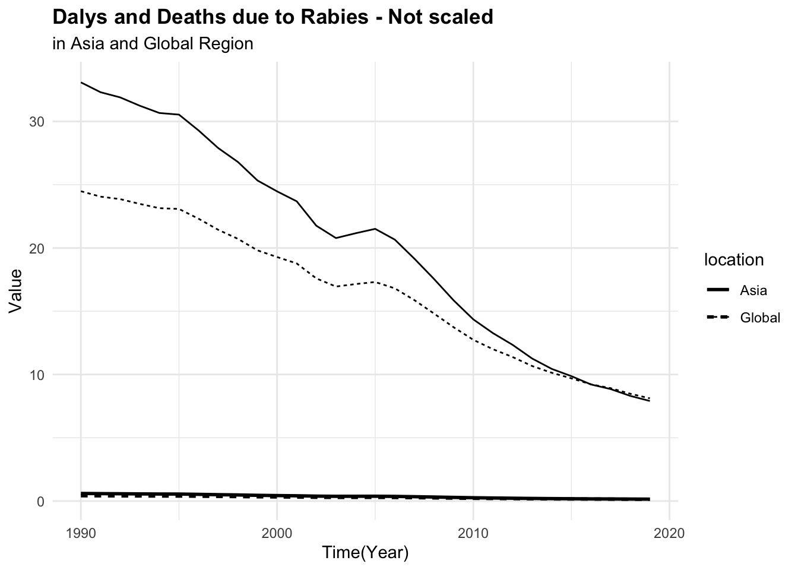
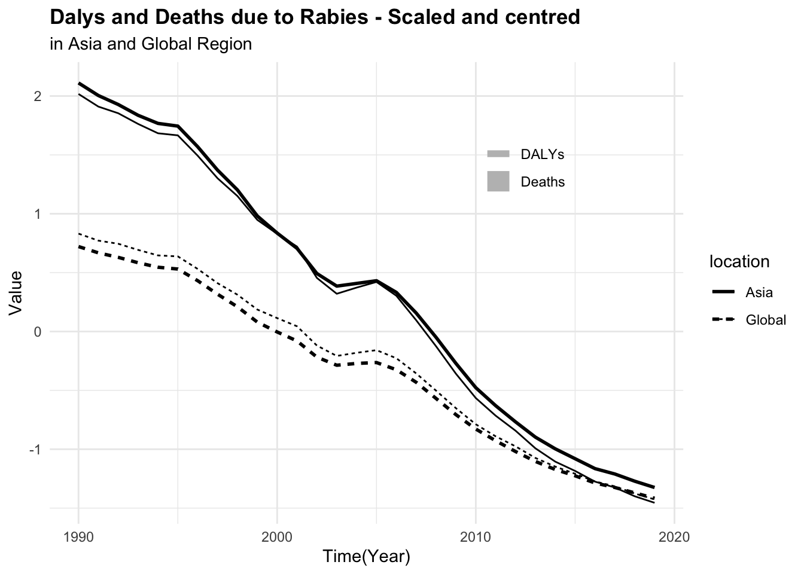
Creating new features from existing ones provide additional predictive power. Then, combine the cause vector in a way to obtain two vectors for death rates due to rabies and all causes, scale and centre the numeric variables to obtain homogeneous data to use in the model.
all_causes <- hmsidwR::rabies %>%
filter(year >= 1990 & year <= 2019) %>%
select(-upper, -lower) %>%
pivot_wider(names_from = measure, values_from = val) %>%
filter(!cause == "Rabies") %>%
rename(dx_allcauses = Deaths, dalys_allcauses = DALYs) %>%
select(-cause)
dat <- rabies %>%
full_join(all_causes, by = c("location", "year"))
dat %>% head()
#> # A tibble: 6 × 6
#> location year dx_rabies dalys_rabies dx_allcauses dalys_allcauses
#> <chr> <dbl> <dbl> <dbl> <dbl> <dbl>
#> 1 Asia 1990 0.599 33.1 1179. 50897.
#> 2 Asia 1992 0.575 31.9 1151. 49532.
#> 3 Asia 1994 0.554 30.7 1120. 48084.
#> 4 Asia 1991 0.585 32.3 1166. 50412.
#> 5 Asia 1995 0.551 30.5 1116. 47766.
#> 6 Asia 1997 0.502 27.9 1072. 46164.To be able to visualise the magnitude of difference between death rates and DALYs for both rabies and all causes, it is necessary to scale or standardise the data as shown above.
p3 <- dat %>%
select(-year, -location) %>%
scale() %>%
cbind(dat %>% select(year, location)) %>%
ggplot(aes(x = year,
group = location,
linetype = location)) +
geom_line(aes(y = dx_rabies),
linewidth = 1) +
geom_line(aes(y = dx_allcauses))
p4 <- dat %>%
select(-year, -location) %>%
scale() %>%
cbind(dat %>% select(year, location)) %>%
ggplot(aes(x = year,
group = location,
linetype = location)) +
geom_line(aes(y = dalys_rabies),
linewidth = 1) +
geom_line(aes(y = dalys_allcauses))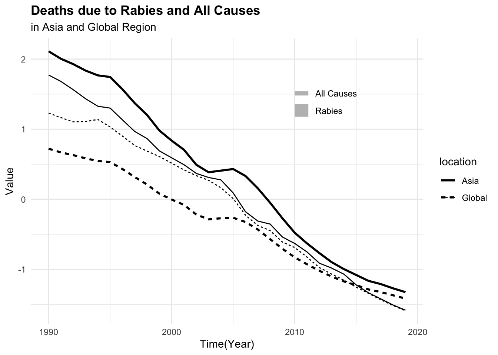
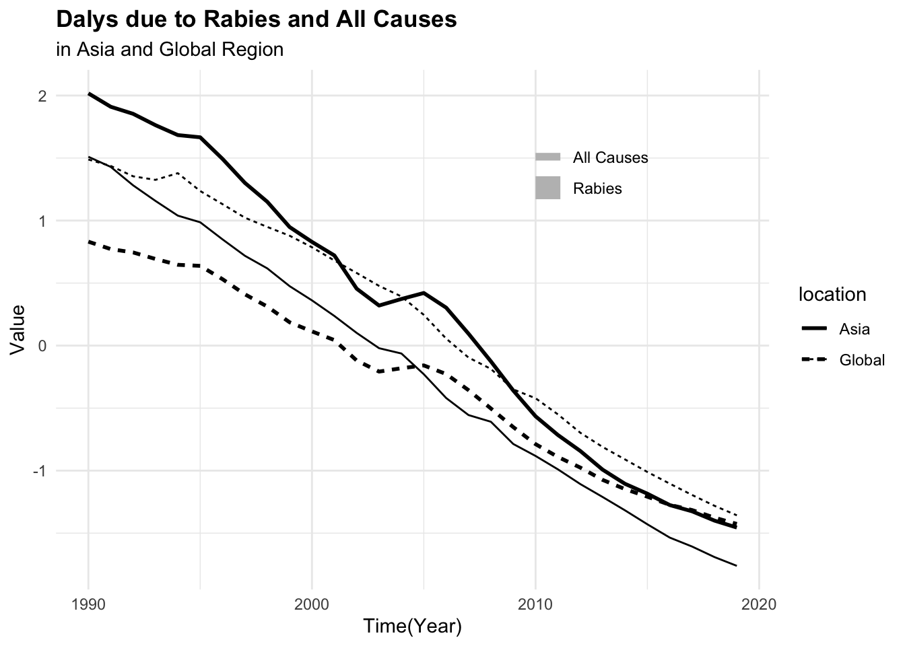
For this task, we will use the {tidymodels} meta-package, as it provides a consistent interface for modelling and machine learning tasks. In particular, we define and execute modelling workflows, to create tailored data pre-processing tasks on various modelling specifications, and evaluate the performance using resampling techniques, to eventually select the best model. A more detailed explanation of the {tidymodels} framework can be found in the book.5
7.4.1 Training Data and Resampling
Splitting data into training and test allows the model to train a subsection of the data and then test its performance on the remaining part of the data, the test set. In this case, we will use the initial_split() function to split the data into training and test sets. The proportion assigned to trains can vary but it is usually assigned to be 80%, also a stratification option can be set.
library(tidymodels)
set.seed(11012024)
split <- initial_split(dat, prop = 0.8, strata = location)
training <- training(split)
test <- testing(split)After that, it is important to create a set of folds, which means a set of subgroups of the original data by grouping following specific directions based on the type of resampling technique. Resampling techniques are used to evaluate the model’s performance and estimate its generalisation error. There are various types of resampling techniques, it depends on the specific characteristics of your dataset, and the goals of your analysis. Some of the most common resampling techniques include:
- k-Fold Cross-Validation for general model evaluation and hyperparameter tuning.
- Bootstrap Resampling to estimate the variability of your model and for smaller datasets.
- Time Series Cross-Validation for time-dependent data to preserve temporal structure.
- Spatial Resampling for spatially correlated data to account for spatial dependencies.
- Stratified Resampling when dealing with imbalanced datasets to ensure proper representation of all classes.
In this case, we will use k-Fold Cross-Validation to evaluate the model’s performance. The vfold_cv() function creates a set of folds for cross-validation, which is used to train and test the model on different subsets of the data.
set.seed(11102024)
folds <- vfold_cv(training, v = 10)7.4.2 Data Preprocessing and Featuring Engineering
As already seen in the exploratory phase, preprocessing data is a crucial step in machine learning\index{Machine learning. This process can include techniques for handling missing values, standardisation of the data, encoding categorical variables, and removing highly correlated variables.
In this case, we will use the {recipes} package to create a recipe, with a set of preprocessing steps. The recipe() function allows us to define a model formula and use various step_<functions>() for manipulating data. We are going to set up 3 recipes, the first is a basic one which includes all variables and does not perform any data transformation.
rec <- recipe(dalys_rabies ~ ., data = training)The second recipe includes some key steps to transform the data into a way specific models would be able to understand and learn from it. Models such as k-nearest neighbours, or support vector machines, that rely on distance metrics, can be sensitive to differences in feature scales.
For instance, non-standardised year data can dominate the model’s decision-making process, leading to biased results. By scaling and centring the data, we ensure that all features contribute equally to the model’s predictions.
We can create more complex recipes with more steps, but for this example, we will use a step for encoding the location variable (Asia, Global) into a numeric vector, and a second step to normalise (or standardise) all predictors.
rec1 <- recipe(dalys_rabies ~ ., data = training) %>%
# convert nominal variables to dummy variables
step_dummy(all_nominal_predictors()) %>%
# scale the numeric variables
step_normalize(all_numeric_predictors())Once the recipe is created, we can apply it to the data using the prep() function, which estimates the necessary parameters for the transformations and applies them to the data. Then, to check the results we can use the juice() function to extract the processed data.
rec1 %>%
prep() %>%
juice() %>%
select(1, 2, 5) %>%
head()
#> # A tibble: 6 × 3
#> year dx_rabies dalys_rabies
#> <dbl> <dbl> <dbl>
#> 1 -1.61 2.12 33.1
#> 2 -1.17 1.79 30.7
#> 3 -1.50 2.02 32.3
#> 4 -1.06 1.76 30.5
#> 5 -0.847 1.40 27.9
#> 6 -0.738 1.23 26.8Trained data can be also tested on new data, in this case we test them on the test set with the bake() function.
rec1 %>%
prep() %>%
bake(new_data = test) %>%
select(1, 2, 5) %>%
head()
#> # A tibble: 6 × 3
#> year dx_rabies dalys_rabies
#> <dbl> <dbl> <dbl>
#> 1 -1.39 1.94 31.9
#> 2 -0.521 0.870 24.5
#> 3 -0.412 0.743 23.7
#> 4 0.131 0.375 20.7
#> 5 -0.738 0.255 20.7
#> 6 -0.521 0.0443 19.3DALYs often aggregate various health impacts, and can have highly skewed distributions. This skewness arises due to several factors: the presence of outliers, the nature of the health condition being measured, and the distribution of the data itself. To handle the skewness of the data, we can apply:
- Log Transformation: log(DALYs+1)
- Sqrt Transformation: \sqrt{DALYs}
- Yeo-Johnson Transformation, a generalisation of the Box-Cox transformation that can handle both positive and negative values: ((DALYs+1)^p-1)/p.
Let’s apply the Yeo-Johnson transformations to the response variable (dalys_rabies) and see how the density distribution changes with different values of \lambda. This is a step that can be tuned with a machine learning algorithm.
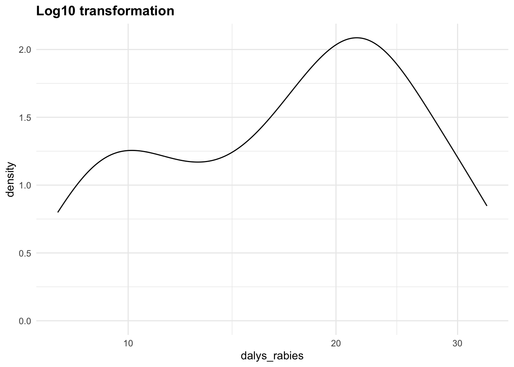
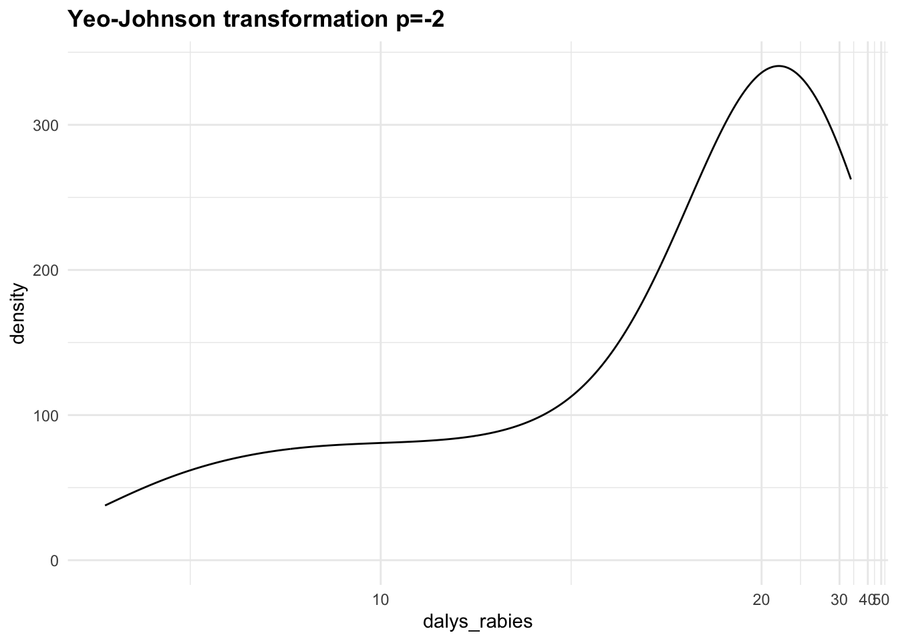
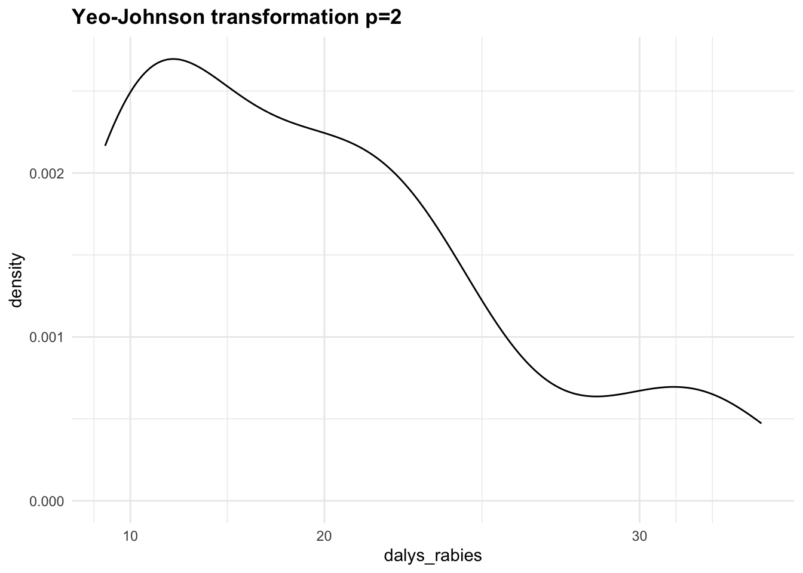
Let’s now create a third recipe with the step_YeoJohnson() function.
rec2 <- rec1 %>%
# apply Yeo-Johnson transformation to the response variable
step_YeoJohnson(dalys_rabies)
rec2 %>%
prep() %>%
juice() %>%
select(1, 2, 5) %>%
head()
#> # A tibble: 6 × 3
#> year dx_rabies dalys_rabies
#> <dbl> <dbl> <dbl>
#> 1 -1.61 2.12 5.97
#> 2 -1.17 1.79 5.78
#> 3 -1.50 2.02 5.91
#> 4 -1.06 1.76 5.77
#> 5 -0.847 1.40 5.54
#> 6 -0.738 1.23 5.447.4.3 Correlation, Multicollinearity and Overfitting
To be noted is that we haven’t applied any correlation selection step on this data. Filtering out highly correlated predictors, such as those with a correlation greater than 80% to avoid multicollinearity, would lead to excluding crucial variables. On the other hand, including all possible covariates in a model often yields implausible signs on covariates or unstable coefficients, as well as overfitting.6
When multiple predictors are correlated, but all are crucial for the analysis (e.g., deaths due to rabies, total deaths, and total DALYs for all causes), applying a correlation step that filters out correlated variables can be problematic. One way to overcome bias arising from it is using regularisation techniques like Ridge Regression or Lasso Regression is often the best approach to handle multicollinearity without removing any predictors. Alternatively, Principal Components Analysis (PCA) can reduce dimensionality while retaining most of the variance. These methods ensure all important predictors are included in the model without the adverse effects of multicollinearity.
7.4.4 Model Specification
The next step is to outline the model specification. There are various type of models that can be used. We start with a random forest. This choice is typically done due to the algorithm’s features, which is able to create multiple bootstrap samples (random samples with replacement) from the original dataset. Each bootstrap sample is used to train a separate decision tree.
7.4.5 Model 1: Random Forest
Rabies death rates may exhibit complex relationships with predictor variables. Random forests are capable of capturing non-linear relationships between predictors and the target variable.
Also, it handles multicollinearity, missing data, provides variables importance and is an ensemble learning method, which means they combine the predictions of multiple individual decision trees to produce a more accurate and stable prediction.
In our simplified case this type of model will do random samples with replacement of data. In {tidymodels} we can select different types of engines, in the case of random forest we could use random forest, ranger, and others. The difference between these engines derives from the specific type of calculation used to make the estimation. The Ranger engine is notably faster than random forest, so let’s use that for this example.
rf_mod <- rand_forest(mtry = tune(),
trees = tune(),
min_n = tune(),
mode = "regression",
engine = "ranger")
wkf <- workflow(preprocessor = rec,
spec = rf_mod)
rf_res <- tune_grid(object = wkf,
resamples = folds,
grid = 5,
control = control_grid(save_pred = TRUE))
show_best(rf_res, metric = "rmse") %>%
select(-n, -std_err)
#> # A tibble: 5 × 7
#> mtry trees min_n .metric .estimator mean .config
#> <int> <int> <int> <chr> <chr> <dbl> <chr>
#> 1 4 1794 7 rmse standard 0.692 Preprocessor1_Model1
#> 2 5 85 17 rmse standard 1.38 Preprocessor1_Model5
#> 3 1 446 16 rmse standard 2.15 Preprocessor1_Model4
#> 4 3 1338 34 rmse standard 2.79 Preprocessor1_Model2
#> 5 2 1151 31 rmse standard 2.91 Preprocessor1_Model3rf_res_tuned <- select_best(rf_res, metric = "rmse")
rf_res_tuned
#> # A tibble: 1 × 4
#> mtry trees min_n .config
#> <int> <int> <int> <chr>
#> 1 4 1794 7 Preprocessor1_Model1rf_fit <- wkf %>%
finalize_workflow(select_best(rf_res,
metric = "rmse")) %>%
fit(training)
rf_fit %>%
predict(new_data = test) %>%
bind_cols(test) %>%
rmse(truth = dalys_rabies, estimate = .pred)
#> # A tibble: 1 × 3
#> .metric .estimator .estimate
#> <chr> <chr> <dbl>
#> 1 rmse standard 0.506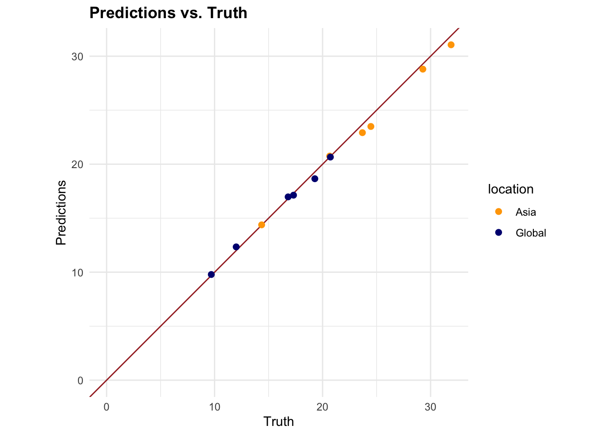
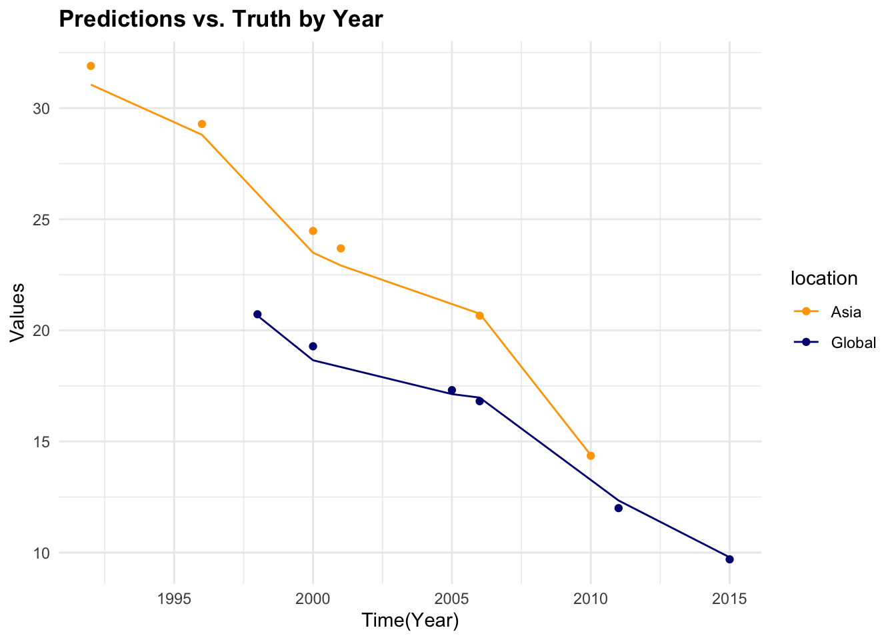
7.4.6 Model 2: Generalised Linear Model (GLM)
Generalised Linear Models (GLMs) involve statistical estimation rather than the iterative parameter tuning, common in many machine learning techniques. However, adding a machine learning feature through parameter calibration can be done using techniques such as cross-validation and grid search to find the best model settings.
To introduce a machine learning feature with parameter calibration into our modelling of the rabies data, we can use a technique like cross-validation combined with a regularisation method or an algorithm that supports parameter tuning. Here, we can employ a model from the glmnet package, which fits a generalised linear model via penalised maximum likelihood. The regularisation path is computed for the lasso or elastic-net penalty at a grid of values for the regularisation parameter lambda.
Adding Machine Learning Features with {glmnet} and Cross-Validation
if (!require(glmnet)) install.packages("glmnet")
library(glmnet)For glmnet, we need to input matrices rather than data frames, and create matrices for the independent variables (predictors) and the dependent variable (response).
predictors <- model.matrix(dalys_rabies ~ .,
data = dat)[, -1] # Remove intercept
response <- dat$dalys_rabiesUse cross-validation to find the optimal lambda value, which controls the strength of the regularisation:
# Set seed for reproducibility
set.seed(123)
# Fit the model with cross-validation
cv_model <- cv.glmnet(predictors,
response,
family = "gaussian")
cv_model
#>
#> Call: cv.glmnet(x = predictors, y = response, family = "gaussian")
#>
#> Measure: Mean-Squared Error
#>
#> Lambda Index Measure SE Nonzero
#> min 0.09043 48 0.05662 0.01147 2
#> 1se 0.13120 44 0.06564 0.01192 2Extracting the best model, we can see that \lambda is 0.165.
# Get the best lambda value
best_lambda <- cv_model$lambda.min
paste("Best Lambda:", best_lambda)
#> [1] "Best Lambda: 0.0904304071218807"And plot the lambda selection with the plot() function.
# Plot the lambda selection
plot(cv_model)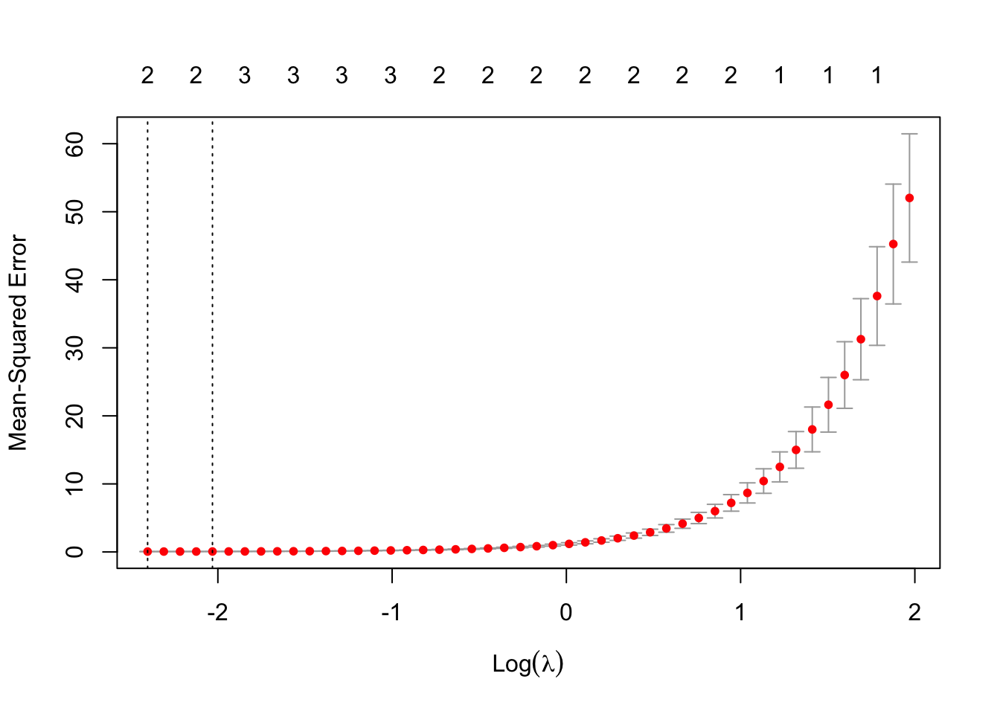
Then, fitting the final model with the selected best lambda, we can predict and evaluate the model.
final_model <- glmnet(predictors,
response,
family = "gaussian",
lambda = best_lambda)
# Predict using the final model
predictions <- predict(final_model,
# values of the penalty parameter lambda
s = best_lambda,
# matrix of new values for x
newx = predictors
)
# Calculate Mean Squared Error
rmse <- sqrt(mean((response - predictions)^2))
paste("Root Mean Squared Error:", rmse)
#> [1] "Root Mean Squared Error: 0.224854043214572"By incorporating glmnet and using lambda selection via cross-validation, we introduce a machine learning feature—parameter calibration into our analysis. This approach not only helps in minimising overfitting but also enhances model performance by selecting the most effective regularisation parameter. The cross-validation process used here is crucial for confirming that our model’s parameters are optimally tuned for the given data, embodying a key aspect of machine learning methodologies.
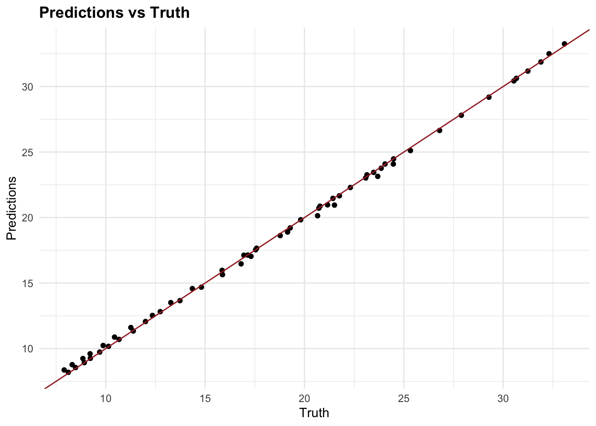
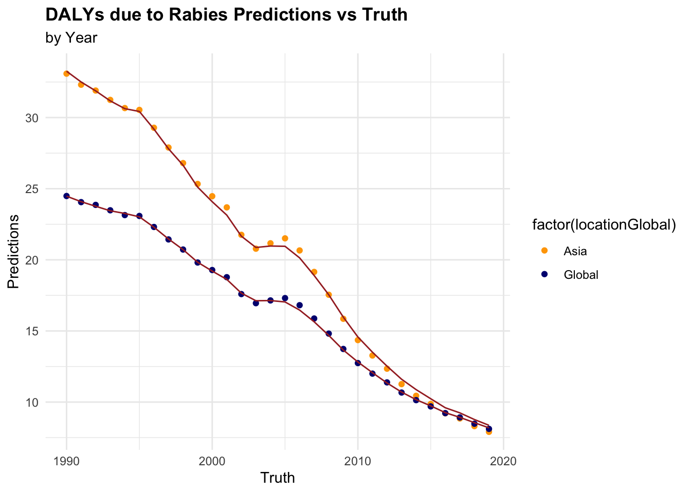
7.4.7 Testing Multiple Models
In the example above, we used two models to predict DALYs due to rabies, a random forest with {tidymodels} and a generalised linear model with {glmnet} with a Root Mean-Square Error of 0.448 and 0.257 respectively. The Random Forest model has a higher RMSE, which means it has a higher prediction error compared to the GLM model. However, we haven’t applied any of the preprocessing steps, and there are many other models that could be used to predict DALYs such as:
Support Vector Machines (SVM): SVMs are a powerful machine learning algorithm that can be used for both classification and regression tasks. They work by finding the hyperplane that best separates the data into different classes or groups.
Extreme Gradient Boosting (XGBoost): Known for its high performance in various prediction tasks, XGBoost can handle missing values and is effective for large datasets.
K-Nearest Neighbours (KNN) models are a type of instance-based learning algorithm that stores all available cases and classifies new cases based on a similarity measure.
Long Short-Term Memory (LSTM) Networks: For temporal or sequential health data, LSTM networks can capture dependencies over time, making them suitable for time-series prediction of disease progression and outcomes.
Each of these models has its own strengths and weaknesses, and the choice of model will depend on the specific characteristics of the data and the goals of the analysis. By testing multiple models and comparing their performance, we can identify the best model for the given data and task.
Let’s use the {parsnip} package and the workflow_set() function to fit a set of models to the rabies data. We will fit a Support Vector Machine (SVM), and a K-Nearest neighbours (KNN) model to the data and compare their performance.
linear_reg_spec <-
linear_reg(penalty = tune(),
mixture = tune()) %>%
set_engine("glmnet")
svm_p_spec <-
svm_poly(cost = tune(),
degree = tune()) %>%
set_engine("kernlab") %>%
set_mode("regression")
knn_spec <-
nearest_neighbor(neighbor = tune(),
dist_power = tune(),
weight_func = tune()) %>%
set_engine("kknn") %>%
set_mode("regression")library(rules)
library(baguette)
# Combine workflows into a workflow set
workflow_set <- workflow_set(preproc = list(scaled = rec1,
yeo_johnson = rec2),
models = list(linear_reg = linear_reg_spec,
svm = svm_p_spec,
knn = knn_spec))
grid_ctrl <-control_grid(save_pred = TRUE,
parallel_over = "everything",
save_workflow = TRUE)
# Fit and evaluate the models with hyperparameter tuning
grid_results <- workflow_set %>%
workflow_map(seed = 1503,
resamples = folds,
grid = 5,
control = grid_ctrl)# Show the results
grid_results %>%
collect_metrics() %>%
arrange(mean) %>%
select(1, 5, 7, 9) %>%
head()
#> # A tibble: 6 × 4
#> wflow_id .metric mean std_err
#> <chr> <chr> <dbl> <dbl>
#> 1 yeo_johnson_svm rmse 0.148 0.0168
#> 2 yeo_johnson_knn rmse 0.150 0.0331
#> 3 yeo_johnson_knn rmse 0.173 0.0271
#> 4 yeo_johnson_svm rmse 0.175 0.0177
#> 5 yeo_johnson_linear_reg rmse 0.178 0.0239
#> 6 yeo_johnson_linear_reg rmse 0.179 0.0243autoplot(grid_results,
rank_metric = "rmse",
metric = "rmse",
select_best = TRUE) +
geom_text(aes(y = mean - 0.1,
label = wflow_id),
angle = 90,
hjust = 1,
color = "black",
size = 3.5) +
lims(y = c(-1.5, 0.9)) +
theme(legend.position = "none")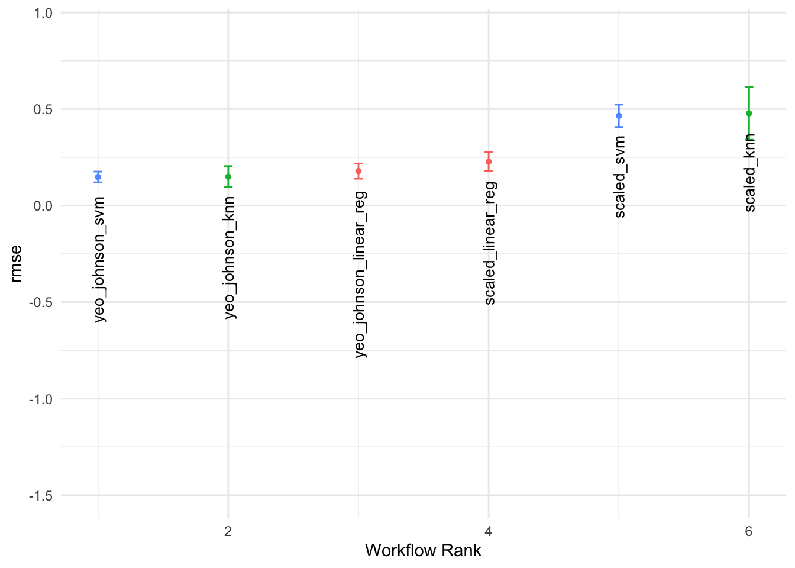
7.5 Summary
The integration of machine learning techniques into public health data analysis can significantly enhance the predictive power and robustness of models. By leveraging the capabilities of machine learning algorithms, we can extract valuable insights from complex health data, enabling more informed decision-making and policy formulation in public health contexts. The examples provided in this chapter illustrate the application of machine learning techniques to health metrics data, demonstrating the importance of feature engineering, model selection, and parameter calibration in enhancing the predictive accuracy and relevance of models. By following best practices in machine learning, public health researchers and practitioners can harness the power of data-driven insights to address critical health challenges and improve population health outcomes.
Best Practices for Machine Learning in Public Health:
- Conduct exploratory data analysis to understand the underlying structure of the data and relationships between variables.
- Apply feature engineering techniques to create new variables and enhance the model’s predictive power.
- Select machine learning models that are contextually appropriate and robust for public health data analysis. Such as Random Forest, Generalised Linear Models, and others.
- Use parameter calibration techniques such as cross-validation, regularisation, monte carlo, and grid search to optimise model performance.
- Evaluate model performance using appropriate metrics and visualisation tools to assess predictive accuracy and relevance.
The integration of machine learning methodologies into public health data analysis represents a significant opportunity to advance the field of public health and enhance our understanding of health metrics and disease dynamics.
Brandon Butcher and Brian J. Smith, The American Statistician 74, no. 3 (July 2020): 308–9, doi:10.1080/00031305.2020.1790217.↩︎
CDC, “About Rabies,” May 14, 2024, https://www.cdc.gov/rabies/about/index.html.↩︎
Katie Hampson et al., “Estimating the Global Burden of Endemic Canine Rabies,” PLOS Neglected Tropical Diseases 9, no. 4 (April 2015): e0003709, doi:10.1371/journal.pntd.0003709.↩︎
“Rabies,” n.d., https://www.who.int/news-room/fact-sheets/detail/rabies.↩︎
Max Kuhn Silge and Julia, Tidy Modeling with r, n.d., https://www.tmwr.org/.↩︎
Kyle J. Foreman et al., “Modeling Causes of Death: An Integrated Approach Using CODEm,” Population Health Metrics 10, no. 1 (January 2012): 1, doi:10.1186/1478-7954-10-1.↩︎